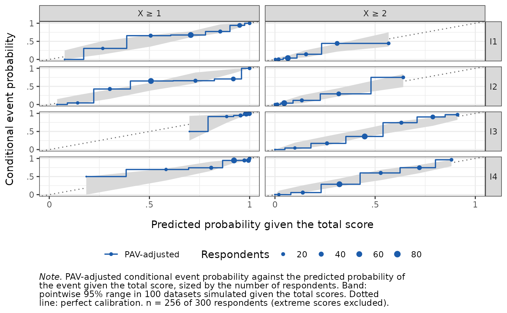

Four diagnostic plots of how each item's response categories are used,
all built on the probability of each category given the respondent's
total score, \(P(X_i = j \mid r)\). Under the partial credit model
this probability depends on the item parameters alone, so no person
locations are estimated and the comparisons are not affected by their
measurement error. Items are shown in rows. RMitemCatFit() gives the
test that the calibration plot shows.
Arguments
- data
A data.frame or matrix of item responses, items scored from 0. Respondents with missing responses are left out (complete cases), since the total score must cover the same items for everyone.
- type
Character. Which plot to draw. Default
"residuals", or"calibration"whenfitis given, since that plot shows the test inRMitemCatFit()."residuals": standardised residuals of the number of respondents in each category, within groups of total scores."adjacent": for each pair of adjacent categories, the share of respondents in the upper one, against the total score."restscore": the mean and SD of the rest score among respondents in each category, observed minus expected, against simulated intervals."calibration": PAV-adjusted calibration of the cumulative events \(X_i \ge k\) against the model's predicted probability.
- fit
Optional result of
RMitemCatFit()withoutput = "list", made from the samedata(checked). Its simulations are used for the rest-score and calibration plots, soiterations,parallel,n_coresandseedare ignored. Each item's corrected p fromRMitemCatFit()is shown under its label, in bold when below .05 (marked with an asterisk when ggtext is not installed), and the fit's item labels are used unlessitem_labelsis given.- score_groups
Integer. Number of total-score groups for
type = "residuals", formed with roughly equal numbers of respondents. Default5L.- iterations
Integer, at least 20. Number of simulated datasets for
type = "restscore"andtype = "calibration"whenfitis not given. Default200L.- conf_level
Numeric in (0, 1). Coverage of the pointwise bands and intervals. Default
0.95.- item_labels
Optional character vector of unique item labels for the row strips, one per column of
data. Default: column names.- label_wrap
Integer. Characters per line in the row strips. Default
15L.- parallel, n_cores
Logical / integer. Run the simulations in parallel via mirai when available. Default sequential. When
n_coresisNULL,getOption("mc.cores")is used, and two workers when that is unset too.- seed
Optional integer for reproducible simulations. See easyRasch2-reproducibility.
- output
Character.
"ggplot"(default) or"dataframe"for the data behind the plot.
Value
output = "ggplot": a ggplot2::ggplot object, one row of panels per item.output = "dataframe": the data behind the plot, with columnsitemand, bytype:"residuals":score_group,category,observed,expected,z."adjacent":pair,score,n_pair,observed,expected,lower,upper."restscore":statistic,category,observed,lower,upper,iterations_used."calibration":event,predicted,cep,n,lower,upper.
Details
Respondents with the lowest or highest possible total score are left
out, since their responses are fixed by the score. The item parameters
are estimated by conditional maximum likelihood (psychotools). As in
RMitemCatFit(), a category that is empty, or used only by respondents
with an extreme total score, stops the function with an error that
names the item.
A plain comparison of observed and expected category counts would show nothing. The category counts are sufficient statistics for the item parameters, so at the CML estimates the expected counts equal the observed ones. Differences show only once respondents are split by total score, which every plot here does.
Residuals. For each item, category and score group, the observed number of respondents minus the expected number, divided by its standard deviation under the model. Dotted lines at \(\pm 1.96\) mark values that would be unusual for a single cell. The plot has many cells, so some values beyond them are expected even when the model holds. The expected counts treat the item parameters as known. This comparison of observed and expected counts within score groups is the one behind Glas's (1988) R1c test.
Adjacent categories. Among respondents in category \(j - 1\) or \(j\) at total score \(r\), the share in \(j\). Under the model this share rises with \(r\). Observed shares that do not rise suggest that respondents do not distinguish the two categories. The band is the pointwise binomial range around the expected share, given the number of respondents in the pair.
Rest score. The mean and SD of the rest score (total score minus the item's score) among respondents in each category, observed minus expected. A category used by respondents with too low or too high rest scores, or with too wide a spread, stands out. Intervals come from datasets simulated from the model given each respondent's total score, with the item parameters re-estimated in each, so the uncertainty in the estimates is included.
Calibration. For each cumulative event \(X_i \ge k\), the model predicts \(p = P(X_i \ge k \mid r)\). The observed events are regressed on \(p\) by pool-adjacent-violators (PAV), which gives the conditional event probability, the best non-decreasing fit to the observed events (Dimitriadis et al., 2021). This is the PAV-adjusted reliability diagram recommended for ordinal outcomes by Säilynoja et al. (2025), with the prediction taken from the total score instead of a person estimate. Agreement puts the curve on the diagonal. The band is the pointwise range of the same curve over datasets simulated given the total scores at the estimated item parameters. A curve that is too flat means the event separates respondents less well than the model predicts, and too steep means better. Because CML reproduces each category's count, the curve cannot lie above or below the diagonal overall, only cross it.
All bands and intervals are pointwise. They show where to look, not whether an item fits, and with many points some fall outside even when the model holds.
References
Dimitriadis, T., Gneiting, T., & Jordan, A. I. (2021). Stable reliability diagrams for probabilistic classifiers. Proceedings of the National Academy of Sciences, 118(8), e2016191118. doi:10.1073/pnas.2016191118
Glas, C. A. W. (1988). The derivation of some tests for the Rasch model from the multinomial distribution. Psychometrika, 53(4), 525–546. doi:10.1007/BF02294405
Säilynoja, T., Johnson, A. R., Martin, O. A., & Vehtari, A. (2025). Recommendations for visual predictive checks in Bayesian workflow. arXiv. doi:10.48550/arXiv.2503.01509
See also
RMitemCatFit() for the test, RMitemCatProb() for the
model-implied category curves, RMitemICCPlot() for conditional item
characteristic curves.
Examples
# \donttest{
if (requireNamespace("eRm", quietly = TRUE)) {
data(pcmdat2, package = "eRm")
RMitemCatFitPlot(pcmdat2)
RMitemCatFitPlot(pcmdat2, type = "adjacent")
RMitemCatFitPlot(pcmdat2, type = "calibration", iterations = 100,
seed = 1)
}

# }